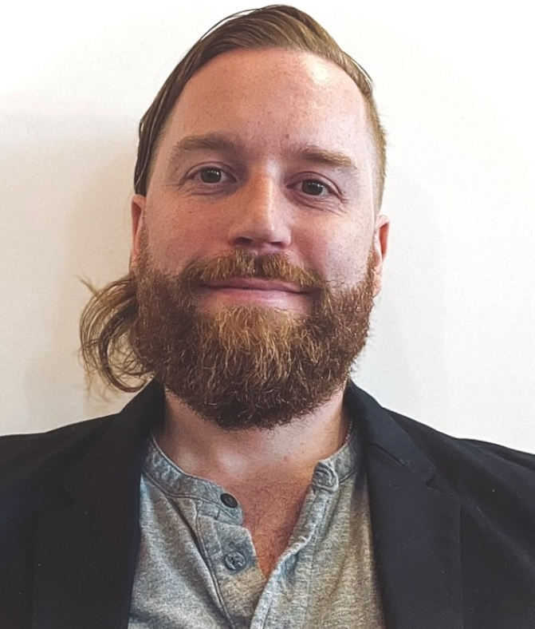
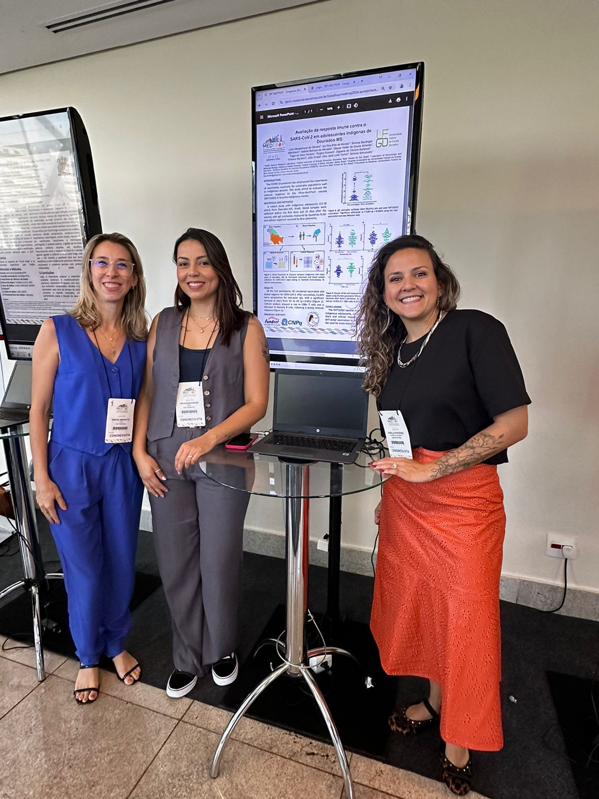

Team
Our Team
Founding Leadership
The Instituto Dourados began when two Stanford researchers, one from Brazil, one from the United States, received research fellowships to apply advanced analytical techniques to improve pandemic preparedness.
That humble fellowship enabled us to devleop our shared research between each other and with our Brazilian partners, with both founders traveling frequently to Brazil to listen, observe, learn, and build our research program.
Izabela Mauricio de Rezende, PhD

Dr. Rezende is a virologist and Research Scientist at Stanford University School of Medicine leading interdisciplinary studies on infectious disease epidemiology and virus evolution. Her work bridges genomic surveillance with public health interventions to better protect vulnerable populations, especially to learn all the the COVID-19 pandemic in Brazil.
At the Institute, Izabela leads the recruitment and coordination of the Scientific Advisory Board, ensuring that our initiatives are grounded in rigorous research and international collaboration. She is dedicated to establishing sustainable research partnerships between local institutions, like the Federal University of Grande Dourados (UFGD), and global hubs to advance Indigenous health equity.
Izabela holds a PhD in Microbiology/Virology from the Universidade Federal de Minas Gerais, as well as a Master’s in Infectious Diseases and a B.S. in Biology from the Universidade Federal de Juiz de Fora.
Matthew A. Turner, PhD

Dr. Turner is a quantitative social scientist accelerating translational research to make sustainable societies the more attractive and viable choice. In 2023, for example, he received the Cognitive Science Society Conference’s Diversity and Social Inequality Award for demonstrating how much more successful societies can be when they include all minority groups in adaptation efforts. Sustainability includes public health: a healthy population is a prerequisite for participation in sustainable systems.
Dr. Turner has developed and taught courses in quantitative social science at the Stanford Doerr School of Sustainability at Stanford University. He holds a PhD in Cognitive and Information Sciences from the University of California, Merced; an MS in Applied Physics from Rice University; and a dual BS in Mathematics and Physics from Syracuse University. He also worked for several years as a software developer.
Scientists
Manjari Mishra, PhD
Dr. Mishra is a biophysicist, pharmacologist, and infectious disease biologist specializing in analytical sciences and targeted therapeutics. She earned her Ph.D. in Membrane Biophysics and Chemical Biology from the Indian Institute of Technology Bombay, India, where she studied how pathogenic lipids from Mycobacterium tuberculosis alter host cellular functions through membrane organization and signaling pathways. Her research has since expanded into virology, antiviral strategies, and translational therapeutics, with a focus on understanding host–virus interactions and developing approaches for future pandemic preparedness.
Dr. Mishra joined Instituto Dourados because she shares its commitment to Indigenous health equity and community-centered scientific initiatives to boost autonomy and capacity in all marginalized communities. She will advance global collaborations, expand research accessibility, and lead new initiatives to support equitable healthcare innovation worldwide.
Outside of research, she enjoys cooking, traveling, and mentoring young scientists.
Student Interns
Student interns in Brazil The interns studying at the Universidade Federal de Grande Dourados in Brazil neighbor the Dourados Indigenous Reserve, and so will lead the effort to expand access to our work products by residents of the Reserve.
Student interns in the United States focus on increasing the Instituto’s research capacity by contributing to research, maintaining the Instituto Dourados website, and coordinating software contributions across all interns.
Mariana Barreto Alcantara

Mariana is a first year student at the University of California, Berkeley, double majoring in Neuroscience and Business Administration. Originally from Salvador, in the state of Bahia, Brazil, Mariana spent the past four years in the United States. She is passionate about applying the knowledge and skills gained working with Instituto Dourados to strengthen Brazilian public health by bridging interdisciplinary scientific research and community impact in Brazil.
At the Institute, Mariana contributes to basic research, public health communications aimed at educating communities on healthy living practices and the role of scientific research in promoting well being. Her work also spans social sciences and computational epidemiology, developing systems to visualize public health data and identify the social factors that most significantly influence disease spread across different contexts.
UFGD Research Advisers in Indigenous Public Health
- Professor Simone Simionatto — UFGD • ResearchGate
- Professor Matheus de Carvalho Hernandez — UFGD • ResearchGate
- Laís Albuquerque de Oliveira — UFGD • LinkedIn
- Caio Gustavo Simonelli — UFGD • CNPq Online CV

Foundational Support
Instituto Dourados was made possible through the support of Mrs. Jill Freidenrich, whose funding provided fellowships and research support for Drs. Rezende and Turner at the Pandemic Preparedness Hub at Stanford Medicine. This support enabled Dr. Rezende to initiate collaboration with Prof. Simionatto, which Dr. Turner then joined.